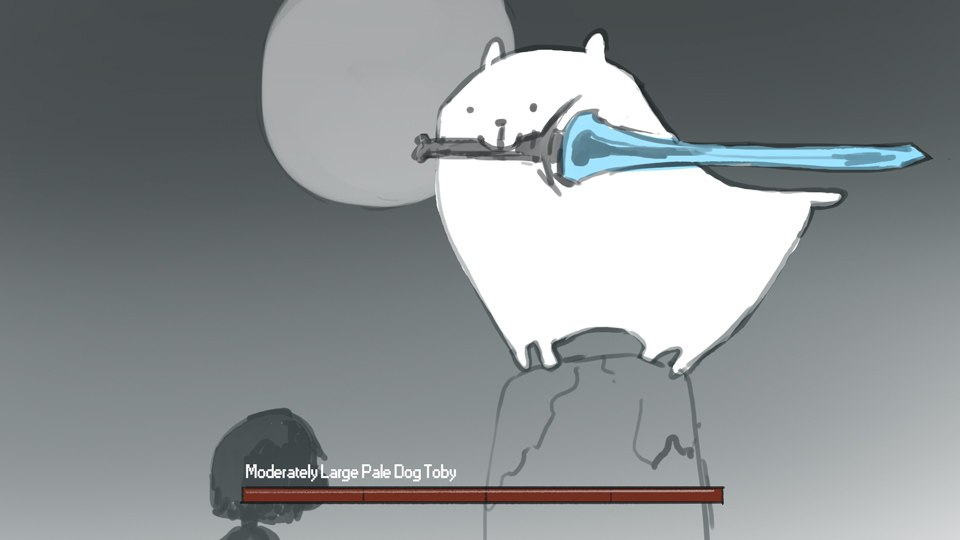
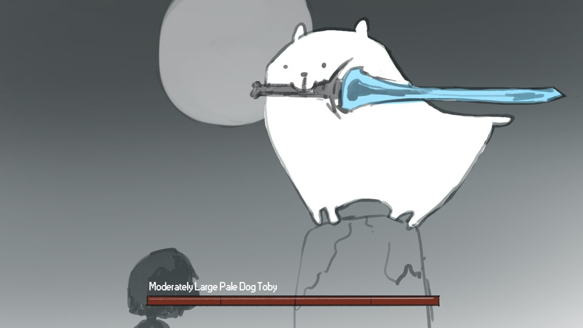
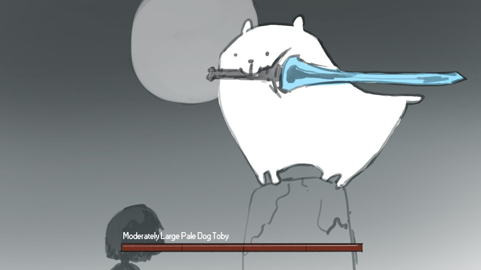

Страж могилы Арториаса, одного из Четырёх рыцарей Гвина.
Сиф, будучи ещё маленьким, сопровождал Арториаса во время его путешествия в Олачиль. Вместе они вошли в Бездну, но были окружены фантомами, похожими на человечность. Арториас использовал магию щита для создания защитного барьера и, оставив Сифа в безопасности, продолжил путь. А маленького Сифа спасает герой из будущего, приведённый к волчонку молодой Альвиной.
Сиф является одним из немногих, кто посвящен в горькую правду о легенде Путника Бездны. Вместе с Альвиной волк сторожит могилу своего павшего товарища.
Если протагонист побывает в DLC до входа в лес и битвы со взрослым Сифом, и там спасёт его в виде молодого волчонка, будет другая заставка, когда он придёт к волку в настоящем. В ней при подходе к могиле Арториаса Сиф не рычит, а узнаёт, но всё же начинает бой. Хотя видно, с какой неохотой волк поднимает меч Арториаса.
